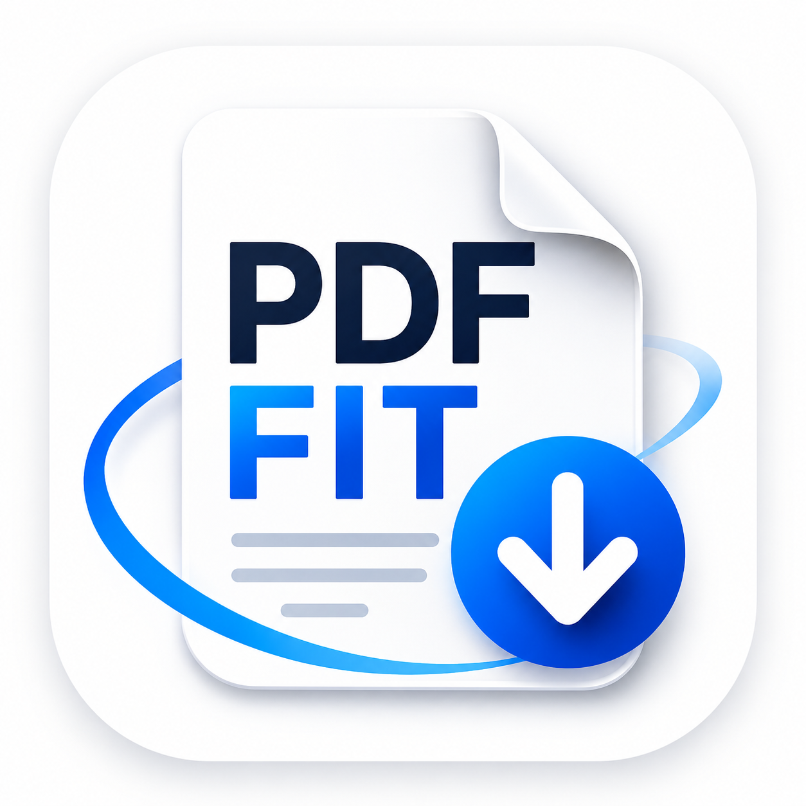

PDF Fit respects your privacy.
All PDF creation, document scanning, photo processing and PDF compression are performed entirely on your device.
The app does not collect, store, transmit or share your documents, photos or personal data.
No uploaded files, scanned documents or imported photos are sent to external servers.
All processing remains on your device and your data stays under your control.
If you have any privacy-related questions, please contact us using the email address below.
Need help, have a question or want to report a bug?
Contact us anytime: